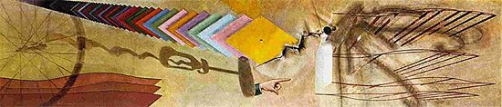

|
|
|
|
|
Accueil |
1918 69,8 x 313 cm huile et crayon sur toile, écouvillon, 3 épingles à nourrice, écrou
New Haven, Yale University Art Gallery, Katherine S. Dreier Bequest

Tu m' est généralement considéré comme la dernière peinture de Duchamp. Ce tableau aux dimensions inhabituelles fut commandé par Katherine Dreier pour occuper un long espace vide au dessus de sa bibliothèque. Duchamp n'avait plus guère de goût à peindre depuis quelques années déjà et aurait certainement décliné la proposition s'il ne s'était agi de Miss Dreier. Cette philanthrope au coeur pur admirait Duchamp et sut toujours obtenir de lui des collaborations fructueuses.